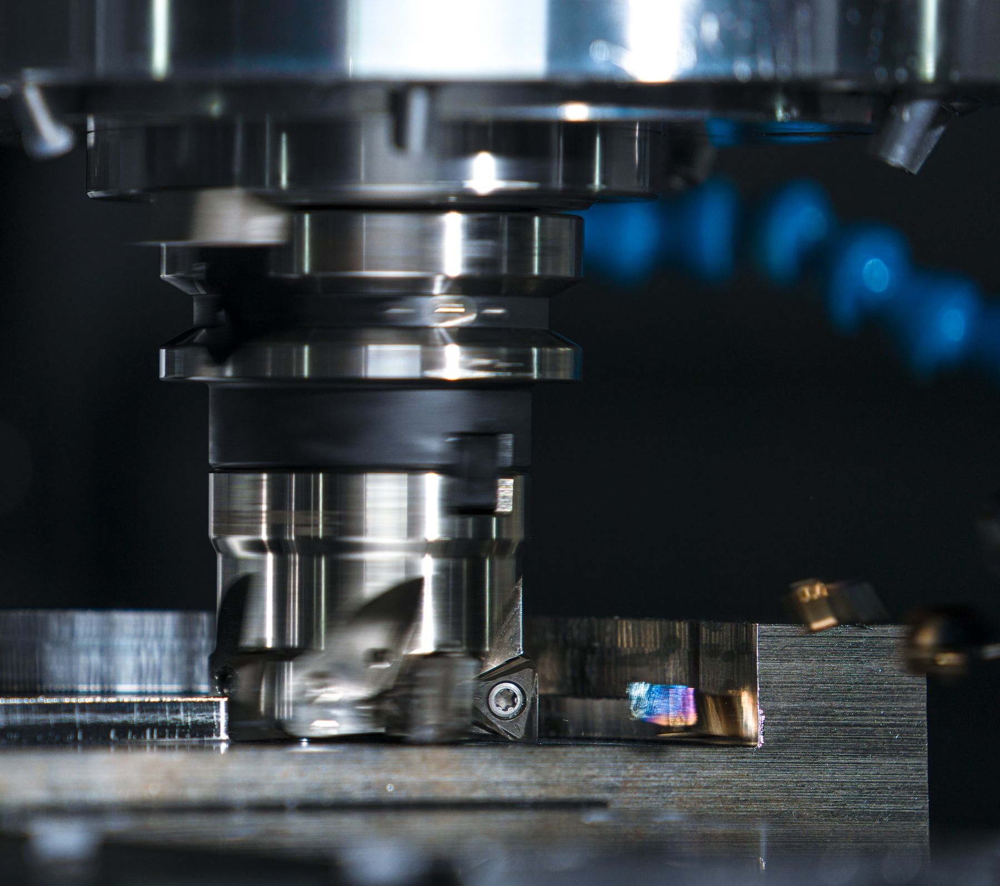
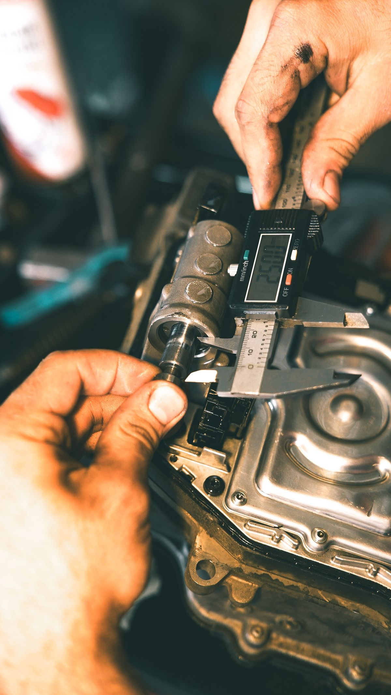

밀링과 선반을 중심으로
도면의 형상, 소재, 공차를 기준으로 CNC 정밀 가공 가능 여부를 검토합니다.
- CNC 밀링
- CNC 선반
- 가공 정밀도 ±0.005mm
CAPABILITY / EQUIPMENT
밀링과 선반, 시제품과 소량 다품종 양산을 설비·소재·정밀도와 함께 검토합니다.
 MILLING / TURNING
MILLING / TURNINGWORK RANGE EXPLORER
한 개의 시제품부터 필요한 만큼, 도면의 형상과 소재·공차를 함께 살펴 가공 가능 여부를 검토합니다.

도면의 형상, 소재, 공차를 기준으로 CNC 정밀 가공 가능 여부를 검토합니다.
PRECISION / TOLERANCE
요구 공차를 소재와 형상에 함께 대입해 가공 가능 여부를 신중하게 검토합니다.

3차원 측정기 1대Mitutoyo
표면조도 측정기보유
1개부터최소 발주 수량 없음
도면 접수 후1일 이내 견적 회신
EQUIPMENT MATRIX
머시닝센터와 CNC 선반, 와이어 방전기에서 측정 설비까지 필요한 공정을 뒷받침합니다.
Doosan DNM 시리즈 6대가 밀링 기반의 정밀 가공을 뒷받침합니다.
MATERIAL BENCH
알루미늄, SUS, 티타늄, 엔지니어링 플라스틱의 적용 가능 여부를 도면과 요구 공차에 맞춰 검토합니다.
알루미늄 가공 요청을 검토합니다. 세부 합금 등급은 도면 또는 요청사항에 적어주세요.